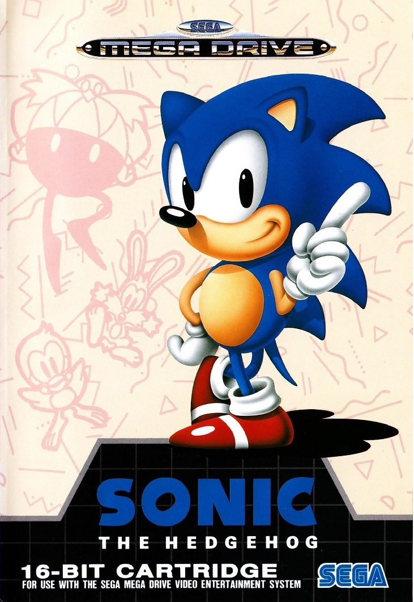

Sonic the Hedgehog

Sonic, ou Sonic the Hedgehog (ソニック・ザ・ヘッジホッグ, Sonikku za Hejjihoggu?), est une série de jeux
vidéo,
développée par la firme japonaise Sega, depuis 1991. Elle met en avant la mascotte de la firme
Sonic, un hérisson bleu anthropomorphe, luttant contre l'antagoniste principal de la série, le
Dr
Robotnik. Sonic doit habituellement déjouer les plans de Robotnik dans son idée de domination du
monde. Le premier jeu de la série, publié en 1991, est produit par le studio Sonic Team de Sega,
à
la suite d'une demande de ce dernier pour la conception d'une mascotte ; le titre est un franc
succès, permet la production d'un bon nombre de suites et permet à Sega d'accéder au statut de
l'une
des plus imposantes sociétés vidéoludiques dans l'histoire des consoles 16-bit du début au
milieu
des années 1990.
Système de jeu
Sonic The Hedgehog est un jeu de plates-formes en 2D. Le joueur contrôle Sonic, un hérisson bleu
très
rapide. Il rencontrera sur sa route d'innombrables robots qu'il a la possibilité de détruire.
Cela
délivrera quelques animaux et rapportera des points au joueur. L'attaque que Sonic peut utiliser
se
nomme Super Sonic Spin Attack (attaque tournoyante supersonique en français) qui consiste à se
mettre en boule pendant sa course pour charger ses ennemis. Il peut également sauter en boule
sur
ses adversaires.
Le joueur trouvera aussi des anneaux éparpillés dans les niveaux. S'il en obtient 100, il gagne
une
vie supplémentaire. Lorsqu'il est touché par un ennemi ou par un piège, tous ses anneaux se
dispersent et il n'a que quelques secondes pour les récupérer. S'il est touché alors qu'il ne
possède plus d'anneau, il perd une vie. Sur les versions Master System et Game Gear, les anneaux
perdus à la suite de l'attaque d'un ennemi ne peuvent pas être récupérés.
Niveaux speciaux
Lorsque le joueur atteint la fin d'un niveau avec au moins 50 anneaux, il peut sauter dans un
anneau
géant qui l'emmène dans un niveau spécial. Ce dernier ressemble à un labyrinthe flottant qui
tourne
sur lui-même. Sonic doit s'y frayer un chemin jusqu'à une Émeraude du Chaos. Il y en a six à
récupérer dans tout le jeu. Ces joyaux (les émeraudes du chaos) ont de mystérieux pouvoirs et
les
posséder tous modifiera la fin du jeu. Si 50 anneaux sont recueillis avant que Sonic touche un
panneau "GOAL" ou obtient l’Émeraude du Chaos, un "Continuer" sera attribué au joueur en sortant
du
niveau. Il y a au total dix occasions d'obtenir une Émeraude du Chaos, ce qui signifie que le
joueur
peut manquer un stage bonus quatre fois s'ils souhaite récupérer les six émeraudes restantes
avant
la fin du jeu.
Sur les versions Game Gear et Master System du jeu, l'étape spéciale est une sorte de flipper
géant
truffé de ressorts où le joueur a environ une minute pour le traverser, sinon tous les bonus
accumulés seront perdus. Cette étape spéciale permet au joueur de gagner un continue et une vie
supplémentaire. Pour y accéder, il faut passer le panneau de fin de niveau avec plus de
cinquante
anneaux. Quant aux émeraudes du Chaos, elles doivent être trouvées dans les zones elles-mêmes
dans
l'acte 1 ou 2.
Phantasy Star IV

Phantasy Star IV: The End of the Millennium (ファンタシースター 千年紀の終りに, Fantashī Sutā Sennenki No Owari
Ni?)
est un jeu vidéo de rôle développé par Sega AM7 et édité par Sega en 1994 sur Mega Drive. Il
s'agit
du quatrième épisode de la série Phantasy Star.
Trame
L'histoire de Phantasy star 4 nous narre les aventures de plusieurs élus dont le but est
d'empêcher la résurrection d'une entité maléfique ayant autrefois fait régner la terreur dans
toute la galaxie. Mais malgré tous leurs efforts, les ténèbres, par l'intermédiaire du mage noir
Zio et de leur incarnation maléfique "Dark Force", réussissent leur plan pour les ramener à la
vie. Aux héros maintenant de les arrêter.
Système de jeu
Le gameplay de ce 4e opus reprend en grande partie celui de Phantasy Star II :
« Le jeu propose de diriger une équipe de personnages. Les combats se déroulent au tour par tour
et le joueur donne d'abord les instructions aux personnages composant son équipe (jusqu'à cinq)
et suit le déroulement du tour. Puis il donne les instructions pour le tour suivant etc. Les
ordres donnés vont de l'utilisation de magie à l'attaque normale ou spéciale, en passant par
l'utilisation d'objet ou la défense (à l'aide d'un bouclier). »